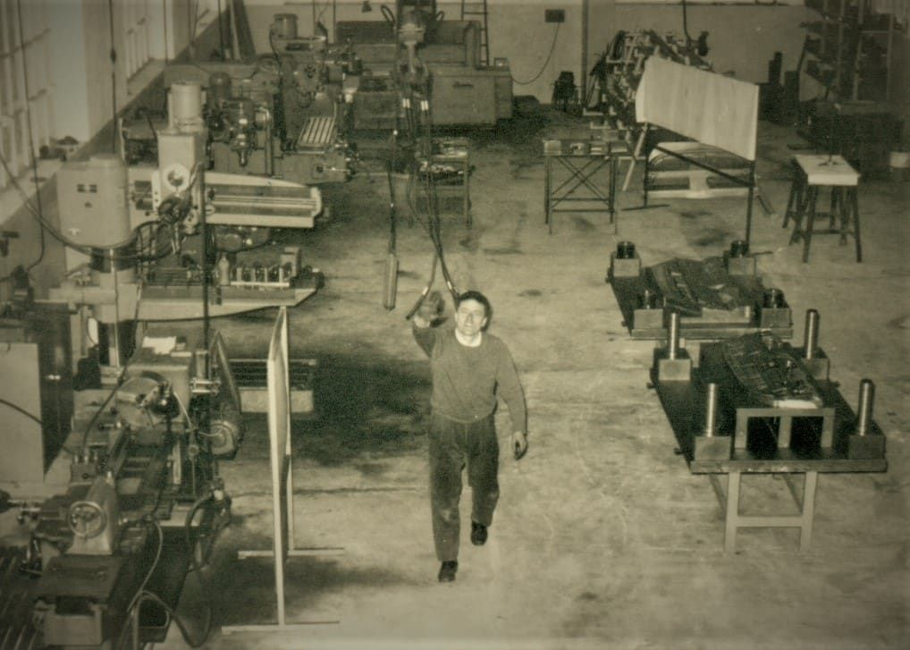

Stampi per l'automotive
Siamo specializzati nella costruzione di linee di stampi per la deformazione a freddo della lamiera, in particolare nel settore dell'automotive. Gli stampi consentono la produzione dei componenti in lamiera necessari per ogni nuovo modello di auto che viene progettato, vengono studiati appositamente ed attrezzati in base ai volumi di produzione richiesti.
Ogni linea di stampi è costruita specificamente per produrre il componente richiesto, non è ripetibile né ripetitiva. Realizziamo stampi di piccole, medie e grandi dimensioni: la misura massima che raggiungiamo è 5000 × 2500 mm.

Il nostro modo di lavorare
-
Dialogo e soluzione
-
Passione e impegno
-
Responsabilità e affidabilità
È con questi valori che, in oltre 50 anni di esperienza, realizziamo soluzioni ad hoc per i nostri clienti, con costante attenzione nei confronti di esigenze e necessità.
A fianco alla produzione di stampi garantiamo un servizio di manutenzione e modifiche di stampi esistenti, piccole produzioni di prototipi, costruzione attrezzature, per rispondere alle esigenze del cliente. Abituati a plasmare la lamiera abbiamo imparato ad essere anche noi flessibili, ascoltando, consigliando, confrontandoci, restando sempre pronti ad una riprogrammazione delle lavorazioni in tempi brevissimi.
Numeri che parlano
- 1969Anno di fondazione
- 50+Anni di esperienza
- 5000×2500mm, stampo massimo
- 13Persone in staff
Vuoi saperne di più sul nostro lavoro?
Scopri come nasce uno stampo, dal disegno del cliente alla messa in linea in produzione.